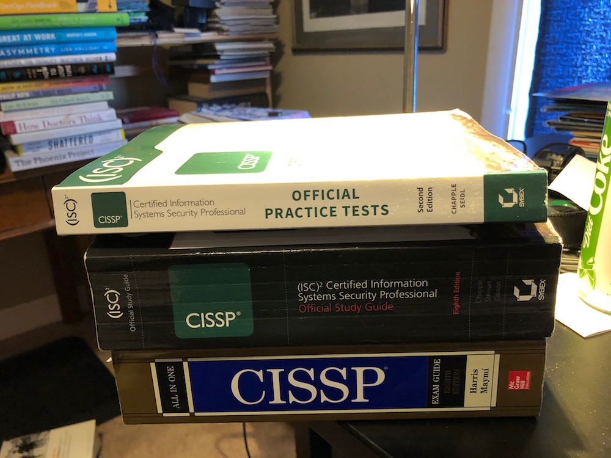

This is about why and how I decided to get the CISSP Certification, and how I studied to pass the exam. I don't put a lot of stock in certs but I saw some strategic reasons to do this one.
I've been at Iora Health since 2011. When Iora started, our business model did not involve the submission of medical claims. Having in those very early days no business relationships with insurance companies, we thought for a brief while that we would not be obligated by HIPAA. Soon enough, though, our business did start working with insurance companies, and that meant we had to stand up a HIPAA program. My colleague Andrew Schutzbank became the HIPAA Privacy Officer, and I became the HIPAA Security Officer. We wrote all of the initial policies and procedures, trained the staff, and began conducting periodic security/privacy reviews and walk-throughs of our practices. 
Over the years I have continued as Security Officer. In 2016 I led up the effort to obtain HITRUST Certification for the company, and that required a complete overhaul of our policies, and a new effort to be able to prove, through evidence, that we are doing all the things we say we do. As a part of that, we started making deeper inquiries with our business partners about their security. We obtained our HITRUST Cert in 2017. Over those years security has become a top priority for the company and in my personal professional development.
About this time, I noticed that many of my opposite numbers at other companies have the CISSP certification. It occurred to me that just as HITRUST helps the company show that we do the right things and take those things seriously, we should probably have someone at the company who has proved out competencies as tested by the CISSP. In September of 2019 I began to study in earnest. Here's what I did.
Before 2017 I had obtained the Sybex CISSP Study Guide, 7th edition, because I was curious about the CISSP. In September 2019 I bought the Sybex sample exams, and quickly noticed that there were questions that weren't addressed by the 7th Edition of the Study Guide. So I acquired the 8th edition of the Study Guide and read it cover-to-cover (except for the software chapters - more about that below). The lead author of that book is Mike Chapple: I also watched all of his CISSP videos on Lynda/LinkedIn (until recently, Lynda was free via many public libraries; but apparently no more). Coupled with the Sybex books are some online quizzes and tests. I found I could pretty easily get an 80% or better on any domain. But I had this nagging suspicion that the Sybex book was a little thin.
In November I started checking in with CISSP communities on Facebook and Reddit. (There's also a nice group on Discord.) Based on what I was reading there, I discovered that the CISSP examination is pretty well understood to have questions that are qualitatively different from many of the electronic practice exams. The CISSP tends to ask more sophisticated questions, and often turns on subtle wording or qualification of the main question. For example, a prompt may be prefaced by: "With regard to risk analysis . . ." and then ask a question that might have a pretty obvious answer in the general case, but perhaps not so obvious when thinking narrowly about risk analysis. When you take the CISSP you sign an NDA, so I can't write very freely about my own experience: Suffice to say that the guidance from Reddit and elsewhere is pretty good.
There was also a lot of talk online about the CISSP prep exams from Boson. The big difference with Boson is that you can read their rather lengthy rationale for the correct answer, coupled with an enumeration of the reasons the wrong answers don't work. After some Boson prep in December, I found that I could pretty reliably score 80-100% in most domains for questions I'd never seen. The one I had trouble with? Software development, where I have the most professional experience.
I think that the problem with the software development domain for the CISSP is that it's hard to test. What you want in a software developer (or perhaps more pertinantly in a software developer manager with a focus on information security) is a very broad ability to exercise the sniff test on what is going on. For instance, you have to have some sensitivity to the idea that a two-tier web app with unsanitized database queries and no input validation might expose you to SQL injection. Well obviously I know that. But how do you test it? A question seemingly beloved by the electronic prep exams is along the lines of: What is the top vulnerability according to the OWASP Top Ten? Well, in 2017 it was injection. But the problem here is that the question is geared to what is easy to test. So presumably some people are going to memorize the whole OWASP Top Ten because it occurs on a prep exam. In my experience, there were a lot of prep questions that were too granular for a commonsense approach to secure software development. In any case, it was clear that I had to learn about managing secure software development "the CISSP way." What I did for this was to pay close attention to what I got wrong, and then read in the late Shon Harris's book CISSP All-in-One Exam Guide, Eighth Edition. This rather amazing book can serve as a nice desktop reference/refresher for most topics in IT Security, from what I can tell. Another great resource for cleaning up weak areas is the (free) series of videos on the CISSP by Kelly Handerhan at Cybrary. Handerhan also has has some great videos on individual topics: For instance, I don't think I would have understood Kerberos very well without her walk-through.
Of course there's no one-size-fits-all study plan, but I think what I did makes a lot of sense, in retrospect:
As to the value of the CISSP? I'm not sure. The exam is now adaptive, and I passed it after the minimum number of questions (100), apparently satisfying a 95% confidence internal suggesting I'd pass with the full 150 questions. Online, people counseled: "Think like a manager"; "remember the information security triad (Confidentiality, Integrity, Availability)"; watch carefully for questions that are driven by budget, not necessarily what is most secure. Those are excellent guidelines for the test experience, but it is a shame that few of the practice questions, from what I can tell, work at that level. One book that doesn't seem to be used much by people prepping for the exam is the CISSP "body of knowledge" book. I'm going to be using that to get some further depth, because unlike the other books, it seems to be much better at citing source documents on which the CISSP knowledge is based.
comments powered by Disqus